| Nombre | Posición | Edad | Bibliografía | Portada |
|---|---|---|---|---|
| Matz Sels | Portero | 31 | Portero del Nottingham Forest, convocado regularmente por Bélgica en competiciones recientes. |
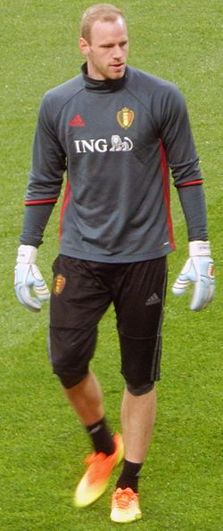 |
| Thomas Meunier | Lateral derecho | 32 | Lateral del Lille OSC, con amplia experiencia internacional y capacidad ofensiva desde la banda derecha. |
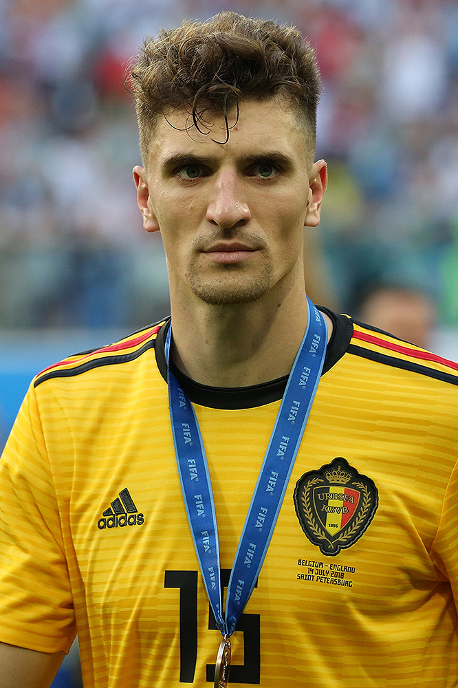 |
| Maxim De Cuyper | Lateral izquierdo | 22 | Jugador del Club Brujas, aporta velocidad y proyección ofensiva en la banda izquierda. |
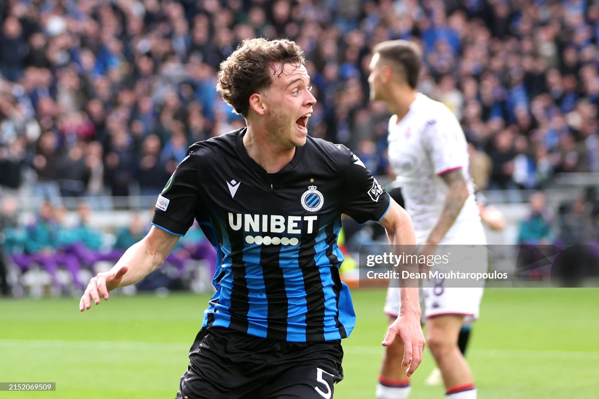 |
| Zeno Debast | Defensa central | 20 | Defensor del Sporting de Lisboa, joven promesa del fútbol belga con gran proyección defensiva. |
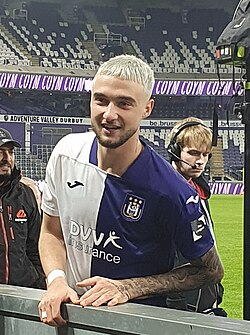 |
| Arthur Theate | Defensa central | 23 | Defensa del Eintracht Frankfurt, sólido en marca y juego aéreo, con potencial para ser titular indiscutible. |
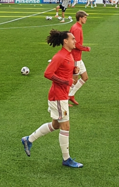 |
| Wout Faes | Defensa central | 25 | Defensa del Leicester City, reconocido por su fuerza física y anticipación en defensa. |
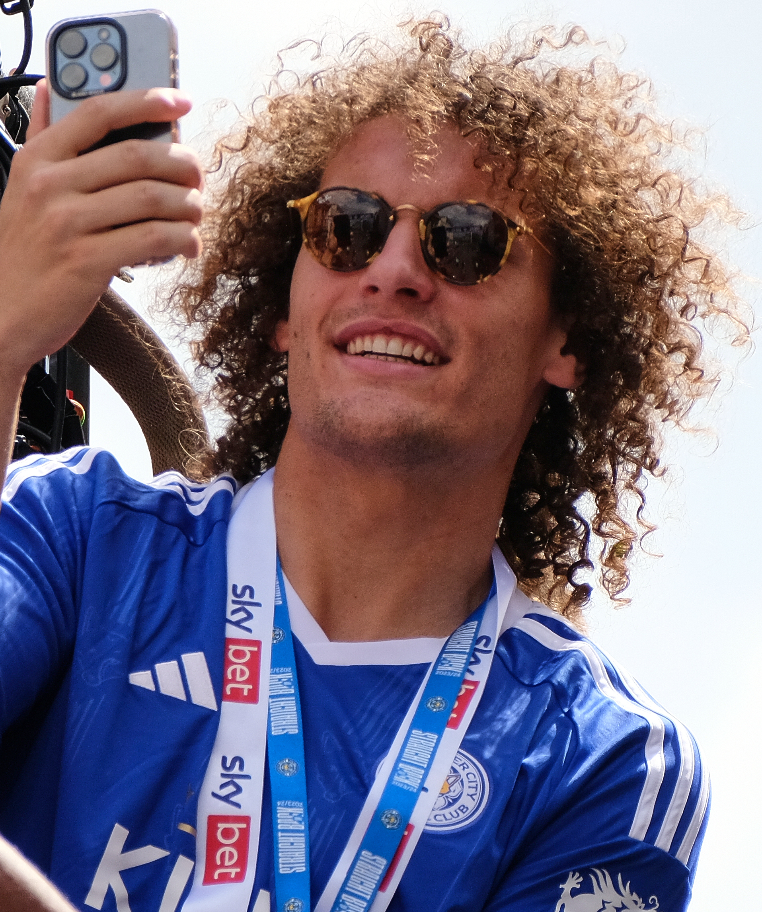 |
| Jérémy Doku | Extremo | 21 | Extremo del Manchester City, destaca por su velocidad, regate y capacidad de desborde por las bandas. |
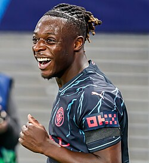 |
| Leandro Trossard | Extremo | 27 | Extremo del Arsenal, versátil y con gran capacidad para asistir y marcar goles. |
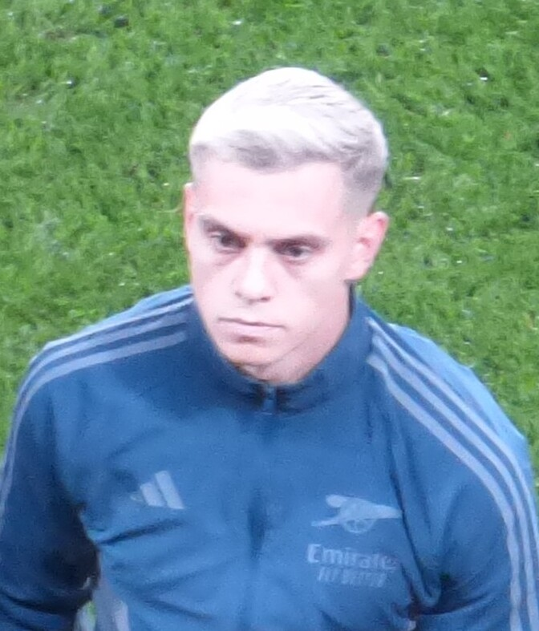 |
| Youri Tielemans | Centrocampista | 26 | Mediocampista del Aston Villa, capitán de la selección belga en 2025, clave en el equilibrio del mediocampo. |
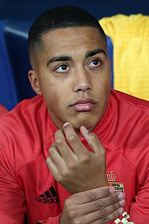 |
| Romelu Lukaku | Delantero | 31 | Delantero del Napoli, máximo goleador histórico de Bélgica y referente en ataque. |
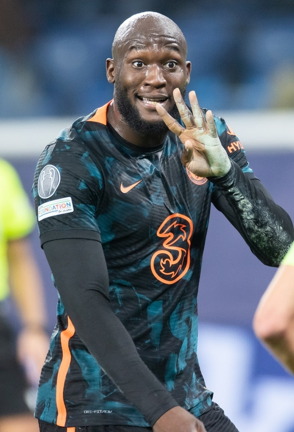 |
| Thibaut Courtois | Portero | 32 | Portero del Real Madrid, titular indiscutido de la selección belga y reconocido por sus reflejos y liderazgo. |
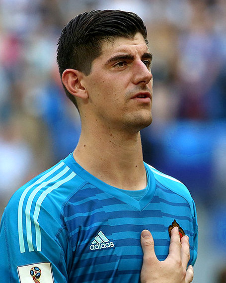 |
| Kevin De Bruyne | Centrocampista ofensivo | 31 | Centrocampista del Napoli, estrella belga conocida por su visión de juego, precisión en los pases y llegada al área. |
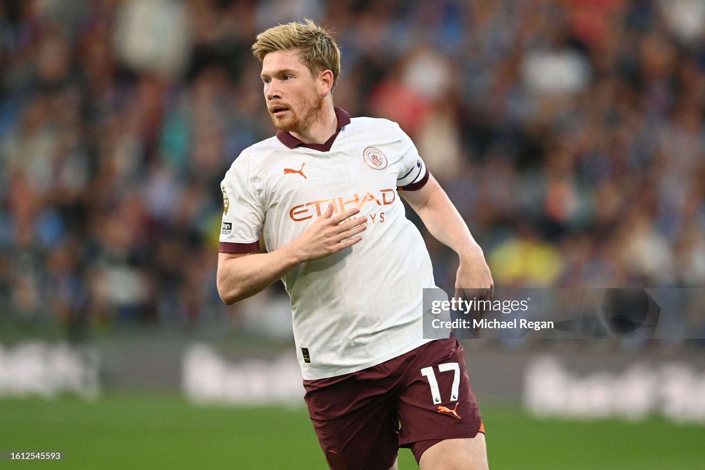 |